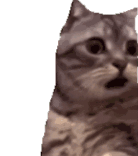
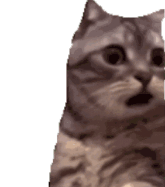

猫咪是世界上最受欢迎的宠物之一。它们以其优雅的姿态、柔软的皮毛和独立的性格而闻名。每只猫都有自己独特的个性，有的喜欢与人亲近，有的则更喜欢独处。无论你是寻找一个安静的伴侣还是一个活泼的朋友，你都能找到适合你的猫咪。
猫咪不仅可爱，而且还有很多有趣的行为。例如，它们喜欢抓挠物体，这是为了标记领地和锻炼爪子；它们也会用尾巴表达情绪，当尾巴高高竖起时，通常表示友好和自信。
猫咪的图片

猫咪的介绍
猫咪是世界上最受欢迎的宠物之一。它们以其优雅的姿态、柔软的皮毛和独立的性格而闻名。每只猫都有自己独特的个性，有的喜欢与人亲近，有的则更喜欢独处。无论你是寻找一个安静的伴侣还是一个活泼的朋友，你都能找到适合你的猫咪。
猫咪不仅可爱，而且还有很多有趣的行为。例如，它们喜欢抓挠物体，这是为了标记领地和锻炼爪子；它们也会用尾巴表达情绪，当尾巴高高竖起时，通常表示友好和自信。
猫咪还在网络上用于各种表情包：参考爱给网
 
